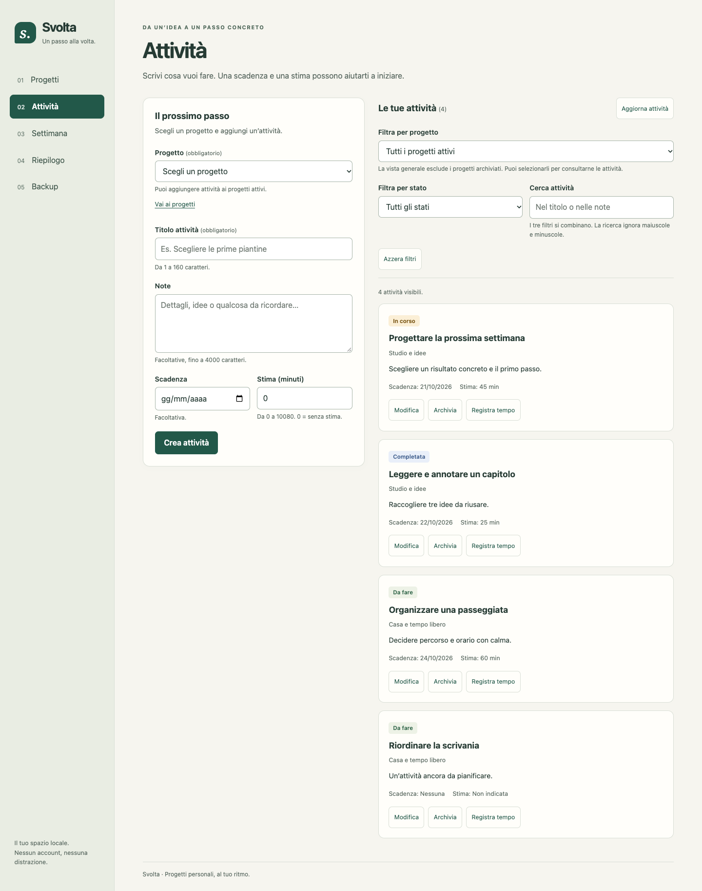
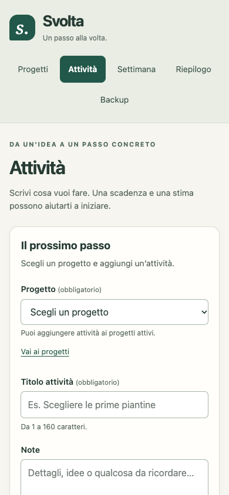
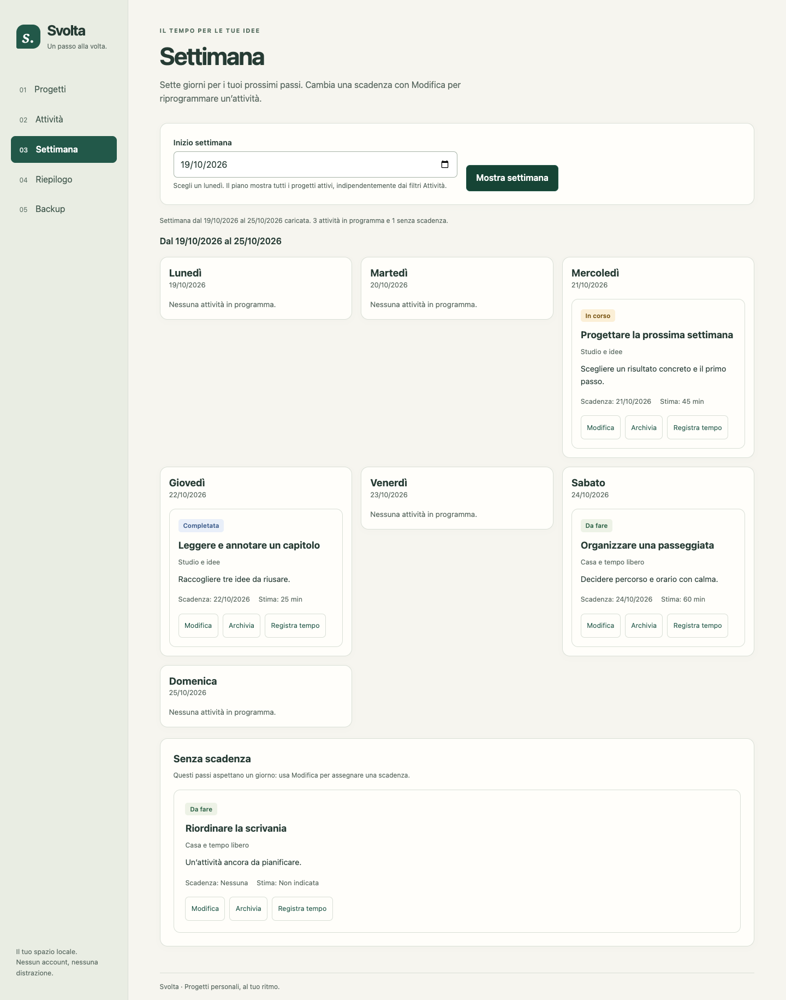
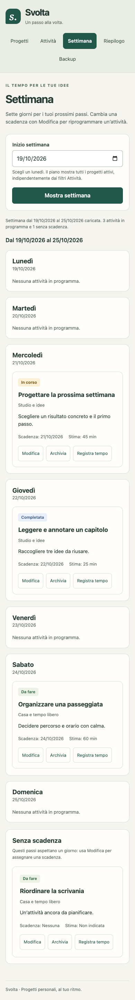
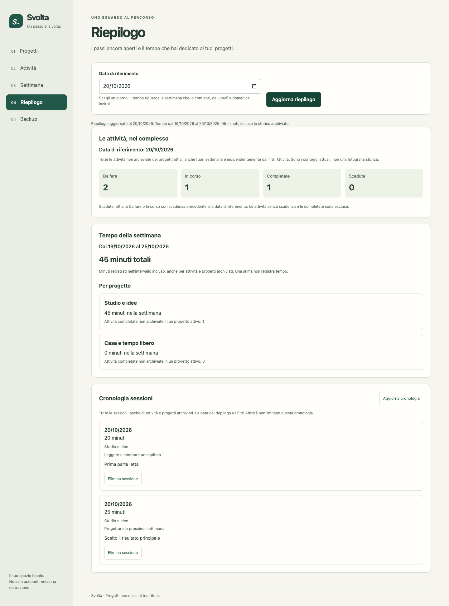
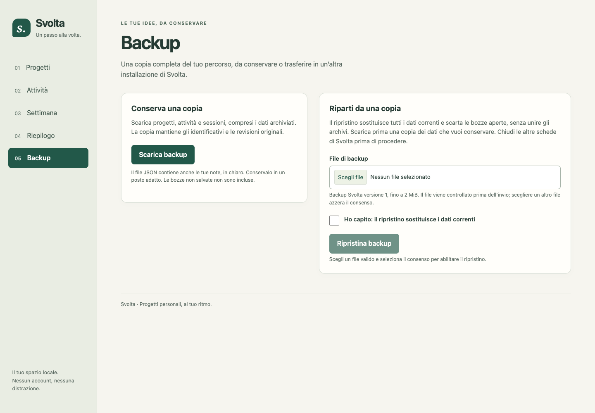
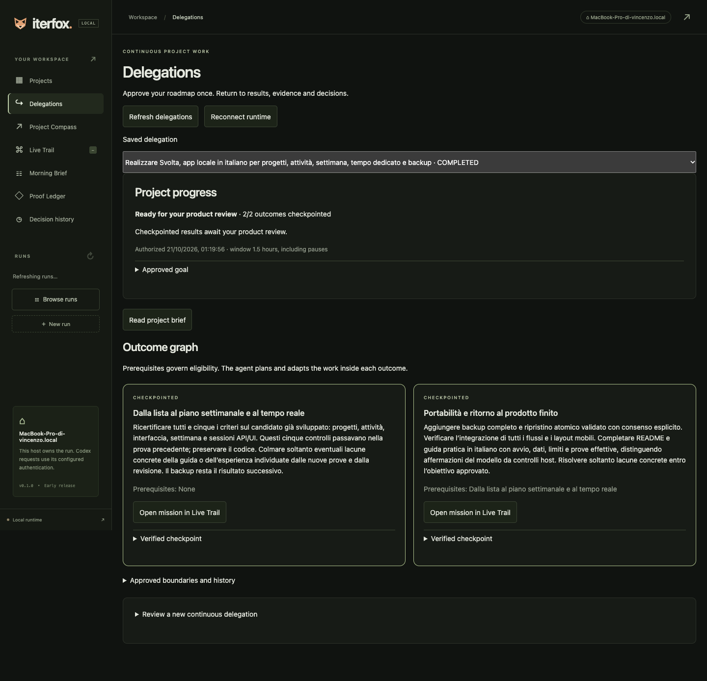
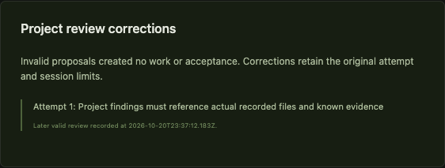

Svolta è un’app locale in italiano per progetti personali, attività, settimana, tempo dedicato e backup. Iterfox l’ha sviluppata con Codex reale, passando da un server iniziale con risposte 404 al candidato osservato. L’assistente ha preparato obiettivo e controlli, seguito l’avanzamento e svolto tre interventi per proseguire la prova: sul passaggio alle verifiche, sul controllo preparato e sulla correzione delle revisioni non valide; non ha scritto a mano il codice dell’app durante le esecuzioni.
L’anteprima contiene due progetti, quattro attività e due sessioni sintetiche inserite esplicitamente dall’host dopo la consegna. L’app nuova parte vuota; i dati dell’anteprima sono separati dai dati delle prove.
Il grafo originale comprendeva quattro risultati: fondamenta persistenti, interfaccia attività, settimana e tempo, backup e consegna. I controlli erano cumulativi: 2, 3, 5, 7. Solo il primo risultato ha ottenuto un checkpoint originale. La prova intermedia ha ricontrollato da zero la copia non certificata dell’interfaccia e ottenuto un checkpoint; è poi stata fermata sul controllo contraddittorio del riepilogo. Dopo il blocco della terza prova, la continuazione finale riparte da una copia invariata del candidato settimanale, dichiaratamente non certificata, con verifiche cumulative nuove per cinque e sette criteri.
| Continuazione | Stato | Criteri verificati | Chiamate | Checkpoint locale |
|---|---|---|---|---|
| Dalla lista al piano settimanale e al tempo reale | CHECKPOINTED | 5/5 | 7 | a8cebbaa4e32 |
| Portabilità e ritorno al prodotto finito | CHECKPOINTED | 7/7 | 10 | 09feec68a241 |
Ogni nuova missione inizia con zero prove ereditate. Un turno dell’agente completato non equivale a un criterio verificato: i PASS sono ricevute dei comandi host sul sorgente corrente. La revisione AI usa la stessa integrazione Codex e non è un audit indipendente.
L’ultimo task del piano aveva chiesto una verifica, risultata negativa. Il motore l’ha trattata come controllo provvisorio anche se non restava lavoro previsto. Il modello degli eventi ha rifiutato questo stato incoerente con il messaggio A deferred check requires unfinished planned work and a non-passing probe. Iterfox si è fermato, senza dichiarare un completamento falso.
La correzione nel motore evita il percorso provvisorio quando non esistono task pianificati ancora in attesa; il controllo ordinario può quindi registrare il fallimento e avviare diagnosi e correzione. Due regressioni verificano sia l’ultimo controllo negativo, sia quello già positivo. Il caso negativo riproduceva il bug prima della correzione. Dopo: 98 test backend superati, 7 opzionali saltati, typecheck e build superati. Nessun codice della UI è stato modificato in questa correzione.
Un secondo limite riguardava il test preparato dall’assistente: richiedeva esattamente «Nome progetto», mentre il campo correttamente associato esponeva «Nome progetto (obbligatorio)»; alcuni selettori potevano includere dialog chiusi. Un audit diagnostico separato ha superato quattro flussi prima di cambiare il test. Il test originale è rimasto intatto. Prima della nuova autorizzazione sono stati corretti solo il suffisso ammesso, la selezione dei controlli visibili e il percorso locale di Playwright; azioni e asserzioni sui dati non sono cambiate.
Dopo le correzioni autonome dell’interfaccia, tutti e cinque i criteri erano verdi. L’interruzione deliberata della revisione era stata recuperata; la risposta successiva conteneva però riferimenti a file o prove non riconosciuti. Il motore l’ha rifiutata e si è fermato. Quel risultato resta BLOCKED, senza un checkpoint del risultato settimanale.
La versione 5ac6eca conserva la risposta scartata in un evento project.review.rejected e può chiedere una nuova revisione entro maxAttempts, quattro nella delega approvata. La proposta scartata non attiva task o prove. Limiti originali, audit del sorgente in sola lettura, pausa e stop restano prioritari; Resume non azzera il conteggio. Il Morning Brief distingue il rifiuto dalla revisione valida successiva. Dieci regressioni aggiunte: 108 test backend superati, sette opzionali saltati, typecheck e build superati; anche 14 casi Chrome e tre flussi aggiuntivi passano.
Prima della quarta autorizzazione è stato dichiarato un guasto aggiuntivo: dopo una risposta SDK reale completata, il driver aggiunge un solo finding con un file inesistente. Risposta reale e alterata sono entrambe conservate con hash. Il motore deve scartare la proposta, non attivarne lavoro e ottenere una nuova revisione reale valida. L’audit congiunto registra anche se la risposta originale era già valida, evitando di attribuire all’iniezione errori preesistenti. Questa prova aggiuntiva non faceva parte delle tre iniezioni previste all’avvio originale.
| Prova ed esito | Guasto deliberato osservato | Recupero registrato |
|---|---|---|
| Originale usable-board | observed-partial-edit src/app.mjs, public/index.html, src/public.mjs | provider-abort; processi chiusi: true; ripresa 2026-10-20T21:19:16.518Z |
| Revisione bloccata weekly-work | review-in-flight | provider-abort; processi chiusi: true; ripresa 2026-10-20T23:02:40.167Z |
| Continuazione finale weekly-work | invalid-review-reference | Proposta scartata; revisione valida a 2026-10-20T23:37:12.183Z |
| Continuazione finale safe-delivery | lost-completed-response | provider-abort; processi chiusi: true; ripresa 2026-10-20T23:46:33.269Z |
Si aggiungono 2 riprese per interruzioni non provocate dal driver: Originale / reliable-foundation, turn-timeout a 2026-10-20T21:13:04.995Z; Continuazione finale / weekly-work, turn-timeout a 2026-10-20T23:36:49.667Z. Il timeout originale era quello configurato a dodici minuti; non viene attribuito a un guasto di rete non dimostrato. Prima delle riprese tecniche il runtime ha chiuso e atteso i processi posseduti, controllato i file e invalidato le prove obsolete. I confini e i limiti autorizzati sono rimasti validi.
Le quattro prove sommano 53 chiamate registrate, 25 unità di implementazione concluse dall’agente, 9 revisioni AI del progetto accettate come valide e 5 task scoperti dopo il piano. Gli eventi riportano 21 controlli negativi correttamente provvisori mentre restava lavoro previsto e 3 inserimenti correttivi dopo un fallimento conclusivo. Questi conteggi descrivono il lavoro osservato, non una misura automatica di qualità.
Un ciclo concreto: il controllo browser si è fermato perché «Registra tempo» rimaneva aperto dopo il salvataggio. Il motore ha avviato diagnosi, inserito la correzione «Chiudere Registra tempo dopo il salvataggio confermato» e ripetuto la prova, che è poi arrivata al riepilogo. Il secondo ostacolo era un selettore rigido getByText(...).first(), che sceglieva testo in un pannello correttamente nascosto: il task «Portare la vista attiva prima dei pannelli nascosti» è un adattamento al controllo, non la prova di un secondo difetto funzionale per l’utente. Nel backup, un ulteriore selettore regex ancorato non riconosceva il whitespace della label del consenso: il task «Normalizzare il testo della label del consenso» ha cambiato soltanto la formattazione del markup. Anche questo è un adattamento a un test rigido, non evidenza di un errore della logica di ripristino. Non sono state inviate istruzioni aggiuntive al worker per queste correzioni.
La prima parte della prova intermedia ha anche speso passaggi ad aggiornare una guida con ID di prove che diventavano obsolete dopo ogni modifica documentale. Il supervisore ha riconosciuto la necessità di una fotografia datata delle evidenze. È un attrito reale: un sistema autonomo deve saper stabilizzare anche il proprio processo, senza inseguire aggiornamenti circolari.
| Criterio finale | Stato | Gruppi nell’ultima ricevuta |
|---|---|---|
| projects-api | PASSED | 6 |
| tasks-api | PASSED | 6 |
| board-ui | PASSED | 4 |
| planning-api | PASSED | 7 |
| planning-ui | PASSED | 3 |
| backup-api | PASSED | 4 |
| backup-ui | PASSED | 3 |
Audit esterno: 8/8 gruppi superati. Le otto definizioni erano preparate prima dell’avvio originale; nella continuazione cambia soltanto il percorso locale. Nessun esito di audit esterno viene usato retroattivamente per riscrivere i checkpoint.
Audit dei checkpoint: PASS. Audit congiunto di replay, budget e integrità: PASS. Le quattro esecuzioni hanno mantenuto il proprio runtime e i propri input protetti; lo storico originale non è stato ripreso o riscritto. Il passaggio fra runtime e versioni dei controlli è dichiarato.
Chrome reale: PASS, desktop 1440×1000 e viewport mobile emulata 390×844. Nei flussi osservati: nessun errore di pagina, richiesta esterna o overflow orizzontale. Non è un test su telefono fisico o con lettore di schermo. Le schermate mostrano dati sintetici.






In Delegations il grafo mostra i risultati e i prerequisiti. Read project brief raccoglie esiti, prove, lavoro residuo e attenzione richiesta. Le singole missioni espongono attività, revisioni e riprese tecniche. L’operatore può fermare o mettere in pausa la delega; una nota non può cambiare silenziosamente i criteri approvati.

8c63be5: la scheda segue pausa, stop e blocco della delega. Typecheck, build, 14 casi Chrome e tre flussi aggiuntivi superati. Una nuova verifica su copia del ledger reale mostra CHECKPOINTED, STOPPED e PENDING; i tre runtime precedenti sono rimasti congelati; la quarta prova include questa correzione visuale. Questa correzione visuale è aggiuntiva rispetto alle tre riprese preparate dall’assistente.
La continuazione ha attraversato risultati successivi e guasti deliberati fino a una consegna verificata senza altri prompt dell’utente o Resume manuali al suo interno. Il valore concreto è tenere insieme obiettivo, piano adattivo, controlli, checkpoint e recupero mentre l’operatore è assente. Il blocco originale dimostra anche che il supervisore richiede ancora sviluppo: in questa prova l’assistente ha corretto due limiti del framework e un controllo host errato.
Il contratto e i controlli sono stati preparati tecnicamente dall’assistente. La UI non ha ricavato da sola questa roadmap da una frase. Non abbiamo confrontato questa prova con Codex diretto, simulato novanta prompt o verificato otto ore continue. La qualità dell’app è giudicata dall’assistente che ha condotto la prova, con evidenze host distinte; non è una revisione di un secondo valutatore indipendente.
Originale: 65.4 minuti; intermedia: 26.3 minuti; revisione bloccata: 29.1 minuti; continuazione finale: 45.7 minuti; 194.7 minuti complessivi dalla prima autorizzazione all’esito finale, incluse le tre correzioni e la preparazione intermedia. La preparazione iniziale dell’obiettivo e dei controlli precede questo intervallo. Finestra condivisa originaria: 2026-10-21T00:50:56.207Z, preservata con un margine di trenta secondi. I 36 turni già usati sono stati sottratti dal limite originario di 140; la continuazione ne poteva usare 104. I token dei turni interrotti possono non essere riportati dal provider: nessuna stima di costo o garanzia di limite di spesa in corso.
Runtime originale b6ca580; correzione dc1285523842, integrata nel ramo di revisione come 6b11e48; correzione visuale separata 8c63be5; riparazione limitata delle revisioni 5ac6eca. Modello gpt-6.1-sol, SDK 0.163.0. Nessun push, merge su main o pubblicazione esterna. Il codice consegnato è esportato dal checkpoint locale finale, senza interventi manuali sul prodotto.